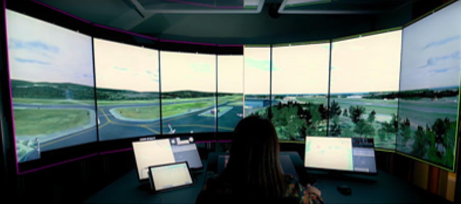

SonAir: the design of a sonification of radar data for air traffic control

Venue. JOMUI (2023)
Materials.
DOI
PDF [link]
Abstract. Along with the increase of digitalization and automation, a new kind of working environment is emerging in the field of air traffic control. Instead of situating the control tower at the airport, it is now possible to remotely control the airport at any given location, i.e. in a remote tower center (RTC). However, by controlling the airport remotely, the situational awareness and sense of presence might be compromised. By using directional sound, a higher situational awareness could potentially be achieved while also offloading the visual perception which is heavily used in air traffic control. Suitable use cases for sonification in air traffic control were found through workshops with air traffic controllers. A sonification design named SonAir was developed based on the outcome of the workshops, and was integrated with an RTC simulator for evaluating to what degree SonAir could support air traffic controllers in their work. The results suggest that certain aspects of SonAir could be useful for air traffic controllers. A continuous sonification where the spatial positioning of aircraft were conveyed was experienced to be partially useful, but the intrusiveness of SonAir should be further considered to fit the air traffic controllers’ needs. An earcon that conveyed when an aircraft enters the airspace and from which direction was considered useful to support situational awareness.
Received the Sonification Award in the analysis category in 2025.
Link to this page: